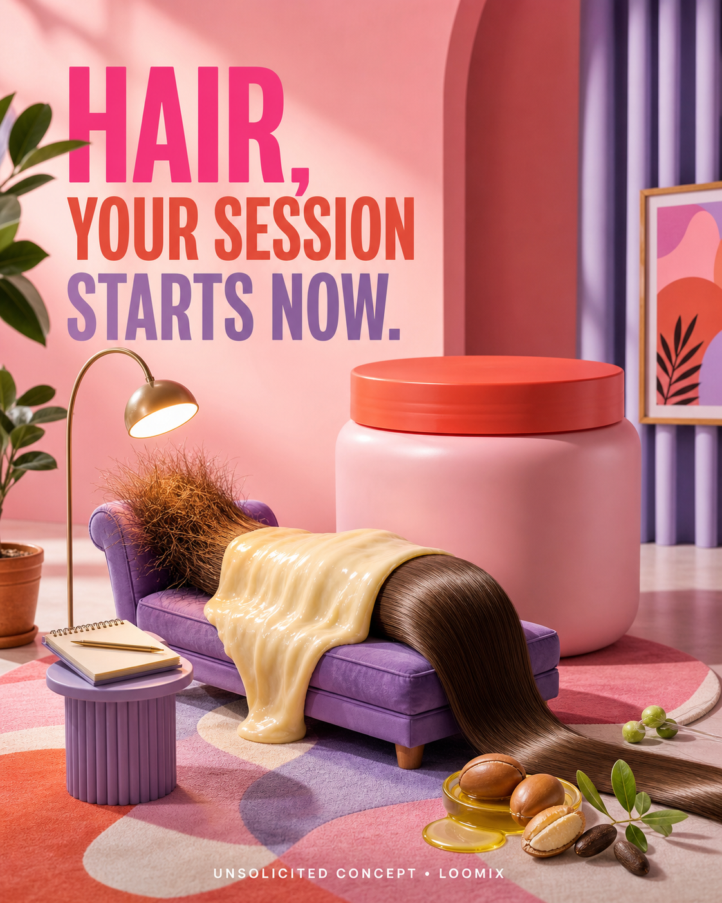

Concept created by LoomixUnsolicited concept
Eva NYCReels + TikTok9:168 seconds
Therapy Session Hair Mask — Hair, Your Session Starts Now
A frayed strand checks into a colorful therapy office. A rich ribbon of mask drapes over it like a comforting weighted blanket, and the strand emerges smooth, soft, strong-looking, and reflective.
Create with LoomixView official product
Hook options
“Hair, your session starts now.”
“Talk it out. Mask it in.”
“Give damage the week off.”
8-second storyboard
Open on a frayed strand reclining on a tiny couch.
Reveal the colorful Therapy Session jar.
Pour a buttery ribbon like a weighted blanket.
Let argan, jojoba, and vegan-protein cues appear.
Pull the strand through smooth, soft, and reflective.
End on the jar, couch, hook, and CTA.
Caption direction
A witty self-care session for stressed strands—rich conditioning becomes a visual comfort blanket, and healthy-looking shine gets the last word.
Made for rapid testing
Loomix turns one product image into a storyboard, short-video direction, captions, and ready-to-post ad copy.
This is an unsolicited creative concept made by Loomix for demonstration purposes. Loomix is not affiliated with or endorsed by Eva NYC.